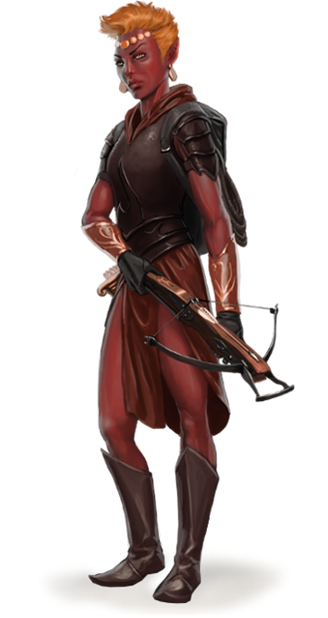

Genasi
Description¶
Rares sont ceux qui considèrent les autres plans que le plan matériel, et ceux qui le font les considèrent comme de lointains royaumes distants, mais l'influence planaire peut être ressentie à travers le monde. Cela se manifeste parfois sous la forme d'individus qui, par le biais d'accidents ou de naissance, possèdent un peu de pouvoir planaire dans le sang. Les genasis font partie de ces individus, étant la progéniture entre les génies et les mortels.
Les Plans Élémentaires sont souvent inhabitables pour les natifs du Plan Matériel : une terre sans cesse en mouvement, des flammes ardentes, des ciels sans limites et des océans sans fond rendent même le tourisme de ces endroits extrêmement dangereux. Les puissants génies, en revanche, n'ont pas tant de problèmes pour s'aventurer dans le monde mortel. Ils s'adaptent parfaitement aux éléments mélangés du Plan Matériel, et ils le visitent parfois — de par leur volonté, ou en y étant magiquement forcés. Quelques génies adoptent une apparence humaine et voyagent incognito.
Pendant ces visites, un mortel pourrait attirer l'œil d'un de ces génies. Une amitié se forme, une romance éclot, et occasionnellement, un enfant en résulte. Ces enfants sont des genasis : des individus liés aux deux mondes, mais n'appartenant à aucun. Certains genasis sont nés d'une union mortel-génie, tandis que d'autres ont deux genasis comme parents, et de rares exceptions sont de lointains descendants d'un génie, leur pouvoir se réveillant après être resté caché pendant des générations.
Rarement, un genasi est le résultat d'une exposition trop intense à un pic de pouvoir élémentaire, à travers de phénomènes tels qu'une éruption d'un Plan Intérieur ou une convergence planaire. L'énergie élémentaire sature alors les créatures environnantes, et peut les altérer suffisamment pour que leurs progénitures avec d'autres mortels soient des genasis.

Héritiers de Pouvoirs Élémentaires¶
Les genasis héritent un peu des deux côtés de leur nature. Ils ressemblent à des humains, mais ont une peau d'une couleur inhabituelle (rouge, verte, bleue, ou grise), et il y a quelque chose qui cloche avec eux. Le sang élémentaire qui coule dans leurs veines se manifeste différemment chez chaque genasi, souvent sous la forme de pouvoir magique.
Vu de silhouette uniquement, un genasi pourrait généralement se faire passer pour un humain. Ceux de l'eau ou de la terre sont généralement plus lourds, tandis que ceux du feu ou de l'air sont plus légers. Un genasi possède parfois des caractéristiques particulières qui rappellent son parent mortel (les oreilles pointues d'un elfe, la carrure d'un nain, les petites mains d'un halfelin, les grands yeux d'un gnome...)
Les genasi n'ont quasiment jamais de contact avec leur parent élémentaire. Les génies n'ont que peu d'intérêt pour leurs enfants humains, et les considèrent comme des accidents.
Certains genasis vivent comme des vagabonds, poussés à l'exil de par leur apparence étonnante et leur étrange magie, ou ont pris le contrôle de tribus d'humanoïdes sauvages ou d'étranges cultes en pleine nature. D'autres ont obtenu des positions de grande influence, particulièrement là où les entités élémentaires sont vénérées. Quelques genasis préfèrent quitter le Plan Matériel pour trouver refuge sur le plan natif de leur parent élémentaire.
Sauvage, et Confiant¶
Les genasis ne manquent que rarement de confiance en eux, se voyant comme égal à toutes les embûches sur leur chemin. Cela se manifeste comme une confiance en soi gracieuse chez certains, et comme un égo arrogant chez d'autres. Cette confiance en soi peut parfois aveugler les genasis vis-à-vis du risque et leurs plans géniaux finissent régulièrement par des problèmes.
Même pour un genasi fier de lui, les échecs entament cette confiance, et donc ils cherchent sans cesse à se dépasser, à développer leurs talents et compétences.
Sous-classes¶
Chaque genasi appartient à l'un des types de genasis :
| Sous-race |
|---|
| Genasi d'Air |
| Genasi de Terre |
| Genasi de Feu |
| Genasi d'Eau |
Culture¶
Langue¶
Genasi d'Air¶
Description¶
Les genasis d'air descendent des djinns, les génies du Plan Élémentaire de l'Air. Arborant bon nombre des traits aériens de leurs ancêtres, les genasis d'air peuvent utiliser leur connexion aux vents.
La peau d'un genasi d'air se trouve dans les teintes du bleu, ou d'une peau humaine tâchée de bleu. Parfois, leur peau est marquée par des lignes qui ressemblent à des craquements et desquelles s'échappe une énergie bleuette. Les cheveux d'un genasi d'air peuvent flotter même sans vent, ou directement être faits de nuages ou de vapeurs.
Mécaniques¶
Augmentation de caractéristiques. Quand vous déterminez les caractéristiques de votre personnage, augmentez l'une de ces caractéristiques par 2 et augmentez une autre par 1, ou augmentez trois caractéristiques différentes par 1. (Conseillé : CON +2, DEX +1)
Type de Créature. Vous êtes un Humanoïde.
Langage. Vous parlez le Commun et le Primordial.
Âge. Les genasis grandissent à peu près au même rythme que les humains et deviennent adultes vers 20 ans. Ils vivent néanmoins plus longtemps, jusqu'à environ 120 ans.
Taille. Votre taille est Moyenne ou Petite. Les genasis sont généralement de la même taille que leur complément non-génie.
Vitesse. Votre vitesse de base est de 35 ft.
Vision dans le Noir. Vous pouvez voir dans une lumière faible à 60 ft. comme si vous étiez dans une lumière vive, et dans l'obscurité comme si vous étiez dans une lumière faible. Vous ne discernez pas les couleurs dans une telle obscurité.
Souffle Sans Fin. Vous pouvez retenir votre respiration indéfiniment tant que vous n'êtes pas incapacité.
Résistance à la Foudre. Vous avez la résistance aux dégâts de foudre.
Danse du Vent. Vous connaissez le cantrip poigne électrique. À partir du niveau 3, vous pouvez lancer le sort feuille morte avec ce trait, sans devoir payer de composantes matérielles. À partir du niveau 5, vous pouvez également lancer le sort lévitation de cette manière. Une fois que vous avez lancé feuille morte ou lévitation avec ce trait, vous ne pouvez pas le relancer tant que vous n'avez pas fini un repos long. Vous pouvez également les lancer en utilisant des emplacements de sort.
L'Intelligence, la Sagesse ou le Charisme est votre caractéristique d'incantation pour ces sorts lorsque vous les lancez avec ce trait (choisi à la sélection de cette race).
Genasi de Terre¶
Description¶
Descendants directs des dao, les génies du Plan Élémentaire de la Terre, les genasis de terre ont hérité de leur force impressionnante et de leur contrôle de la terre.
La peau d'un genasi de terre peut avoir toutes les couleurs de la pierre ou de la terre, que celles d'un humain parsemé de particules telles que de la poussière de gemmes. Parfois, leur peau est marquée par des lignes qui ressemblent à des craquements et qui laissent apparaître des veines de gemme, ou scintillent d'une couleur dorée. Les cheveux d'un genasi de terre peuvent ressembler à de la pierre ou des gemmes sculptées, ou même à des mèches de métal.
Mécaniques¶
Augmentation de caractéristiques. Quand vous déterminez les caractéristiques de votre personnage, augmentez l'une de ces caractéristiques par 2 et augmentez une autre par 1, ou augmentez trois caractéristiques différentes par 1. (Conseillé : CON +2, FOR +1)
Type de Créature. Vous êtes un Humanoïde.
Langage. Vous parlez le Commun et le Primordial.
Âge. Les genasis grandissent à peu près au même rythme que les humains et deviennent adultes vers 20 ans. Ils vivent néanmoins plus longtemps, jusqu'à environ 120 ans.
Taille. Votre taille est Moyenne ou Petite. Les genasis sont généralement de la même taille que leur complément non-génie.
Vitesse. Votre vitesse de base est de 30 ft.
Vision dans le Noir. Vous pouvez voir dans une lumière faible à 60 ft. comme si vous étiez dans une lumière vive, et dans l'obscurité comme si vous étiez dans une lumière faible. Vous ne discernez pas les couleurs dans une telle obscurité.
Marche Terrestre. Vous pouvez vous déplacer sur du terrain difficile sans dépenser de mouvement supplémentaire si vous utilisez votre vitesse de marche sur le sol.
Fusion avec la Pierre. Vous connaissez le cantrip Protection contre les Armes. Vous pouvez le lancer normalement, ou en utilisant une action bonus. Vous ne pouvez le lancer en action bonus qu'un nombre de fois égal à votre bonus de maîtrise par repos long.
À partir du niveau 3, vous pouvez également lancer le sort passage sans trace de cette manière. Une fois que vous avez lancé le sort avec ce trait, vous ne pouvez pas le relancer tant que vous n'avez pas fini un repos long. Vous pouvez également le lancer en utilisant des emplacements de sort.
L'Intelligence, la Sagesse ou le Charisme est votre caractéristique d'incantation pour ces sorts lorsque vous les lancez avec ce trait (choisi à la sélection de cette race).
Genasi de Feu¶
Description¶
Descendants directs des éfrits, les génies du Plan Élémentaire du Feu, les genasis de feu canalisent le pouvoir destructeur et flamboyant des flammes.
Ils affichent leur héritage par leur teinte de peau, qui peut varier du charbon à des tons rouges orangé. Certaines peaux ressemblent à des peaux humaines, mais avec des marques ardentes, comme des lumières tournoyantes sous la peau qui ressemblent à des étincelles ou des lignes rouges scintillantes qui parcourent leur corps comme des craquellements. Leurs cheveux sont généralement des fils de feu, ou un nuage de fumée.
Mécaniques¶
Augmentation de caractéristiques. Quand vous déterminez les caractéristiques de votre personnage, augmentez l'une de ces caractéristiques par 2 et augmentez une autre par 1, ou augmentez trois caractéristiques différentes par 1. (Conseillé : CON +2, INT +1)
Type de Créature. Vous êtes un Humanoïde.
Langage. Vous parlez le Commun et le Primordial.
Âge. Les genasis grandissent à peu près au même rythme que les humains et deviennent adultes vers 20 ans. Ils vivent néanmoins plus longtemps, jusqu'à environ 120 ans.
Taille. Votre taille est Moyenne ou Petite. Les genasis sont généralement de la même taille que leur complément non-génie.
Vitesse. Votre vitesse de base est de 30 ft.
Vision dans le Noir. Vous pouvez voir dans une lumière faible à 60 ft. comme si vous étiez dans une lumière vive, et dans l'obscurité comme si vous étiez dans une lumière faible. Vous ne discernez pas les couleurs dans une telle obscurité.
Résistance au Feu. Vous avez la résistance aux dégâts de feu.
Embrasement. Vous connaissez le cantrip Flamme. À partir du niveau 3, vous pouvez lancer le sort Mains Brûlantes avec ce trait, sans devoir payer de composantes matérielles. À partir du niveau 5, vous pouvez également lancer le sort lame de feu de cette manière. Une fois que vous avez lancé Mains Brûlantes ou lame de feu avec ce trait, vous ne pouvez pas le relancer tant que vous n'avez pas fini un repos long. Vous pouvez également les lancer en utilisant des emplacements de sort.
L'Intelligence, la Sagesse ou le Charisme est votre caractéristique d'incantation pour ces sorts lorsque vous les lancez avec ce trait (choisi à la sélection de cette race).
Genasi d'Eau¶
Description¶
Les genasis d'eau descendent des marides, les génies aquatiques du Plan Élémentaire de l'Eau. Les genasis d'eau sont parfaitement adaptés à la vie sous-marine et possèdent le pouvoir des vagues.
Leur peau est généralement composée de teintes bleues ou vertes, parfois un mélange des deux. S'ils possèdent une peau humaine, elle a une texture inhabituelle, comme parsemée de gouttelettes d'eau, ou même d'écailles. Leurs cheveux peuvent ressembler à des algues, voguant comme exposées à un courant, ou à de l'eau.
Mécaniques¶
Augmentation de caractéristiques. Quand vous déterminez les caractéristiques de votre personnage, augmentez l'une de ces caractéristiques par 2 et augmentez une autre par 1, ou augmentez trois caractéristiques différentes par 1. (Conseillé : CON +2, SAG +1)
Type de Créature. Vous êtes un Humanoïde.
Langage. Vous parlez le Commun et le Primordial.
Âge. Les genasis grandissent à peu près au même rythme que les humains et deviennent adultes vers 20 ans. Ils vivent néanmoins plus longtemps, jusqu'à environ 120 ans.
Taille. Votre taille est Moyenne ou Petite. Les genasis sont généralement de la même taille que leur complément non-génie.
Vitesse. Votre vitesse de base est de 30 ft.
Vision dans le Noir. Vous pouvez voir dans une lumière faible à 60 ft. comme si vous étiez dans une lumière vive, et dans l'obscurité comme si vous étiez dans une lumière faible. Vous ne discernez pas les couleurs dans une telle obscurité.
Résistance à l'Acide. Vous avez la résistance aux dégâts d'acide.
Amphibien. Vous pouvez respirer dans l'air et dans l'eau.
Appel de la Vague. Vous connaissez le cantrip Aspersion d'Acide. À partir du niveau 3, vous pouvez lancer le sort Création ou Destruction d'Eau avec ce trait, sans devoir payer de composantes matérielles. À partir du niveau 5, vous pouvez également lancer le sort marche sur l'eau de cette manière. Une fois que vous avez lancé Création ou Destruction d'Eau ou marche sur l'eau avec ce trait, vous ne pouvez pas le relancer tant que vous n'avez pas fini un repos long. Vous pouvez également les lancer en utilisant des emplacements de sort.
L'Intelligence, la Sagesse ou le Charisme est votre caractéristique d'incantation pour ces sorts lorsque vous les lancez avec ce trait (choisi à la sélection de cette race).